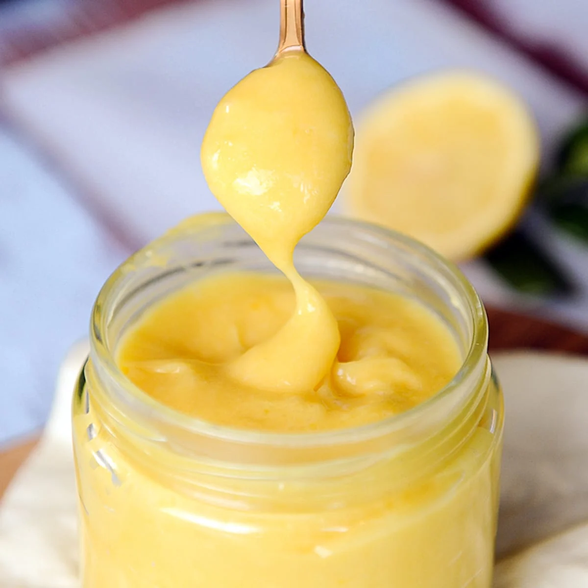

Lemon Curd

Description
Embark on a culinary journey of vibrant citrus flavors with our delectable Lemon Curd recipe. Bursting with the
essence of fresh lemons, this luscious curd strikes the perfect balance between tangy and sweet. Whether you're a
devoted lemon enthusiast or simply seeking a versatile and zesty addition to your culinary repertoire, this recipe
promises to elevate your taste buds to new heights. With its velvety texture and bright, sunny notes, our Lemon Curd
is a delightful spread, filling, or topping that brings a ray of sunshine to any dish. Get ready to immerse yourself
in the simplicity and richness of homemade citrus goodness with this easy-to-follow recipe.
Ingredients
- 4 large lemons (for juice and zest)
- 1 cup granulated sugar
- 1/2 cup unsalted butter
- 4 large eggs
Steps
Zest and Juice the Lemons
- Zest the lemons to get about 2 tablespoons of zest.
- Juice the lemons to yield approximately 1/2 to 3/4 cup of fresh lemon juice.
Whisk Eggs and Sugar
- In a heatproof bowl, whisk together the eggs and sugar until well combined.
Add Lemon Zest and Juice
- Stir in the lemon zest and freshly squeezed lemon juice into the egg-sugar mixture.
Cook Over Medium Heat
- Place the bowl over a pot of simmering water (double boiler) to create indirect heat.
- Add the butter to the mixture and continue stirring until the butter melts and the mixture thickens. This
typically
takes about 10-15 minutes.
Strain the Curd
- Once the curd has thickened and coats the back of a spoon, remove it from heat.
- Strain the curd through a fine-mesh sieve to remove any bits of zest or cooked egg.
Cool and Refrigerate
- Allow the lemon curd to cool to room temperature.
- Refrigerate the curd for at least 2 hours or until it's well-chilled.
Serve and Enjoy
- Use the lemon curd as a spread on toast, a filling for pastries, or a topping for desserts.